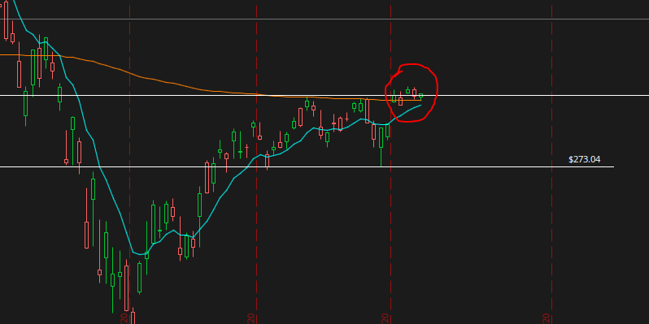
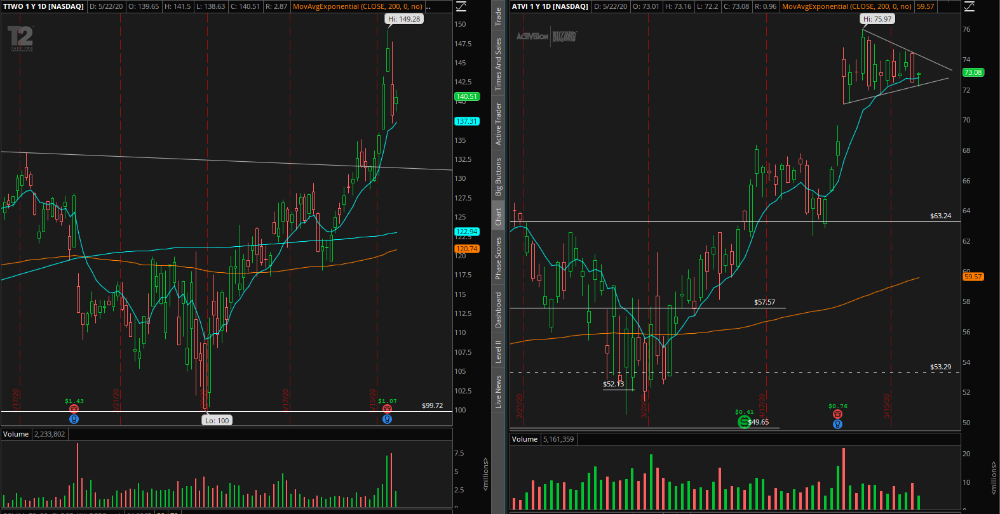

Gaming Gaining
5/22/2020
Author: Anthony Diaz
The trading week started off on Tuesday this week, due to Memorial Day, and it was off to a very bullish start as the S&P 500 climbed above 3,000 with continued hopes of a vaccine, the start of human studies for the vaccine, and being closer to a reopening of the economy. 3,000 is also a major level because it’s what’s called a “psychological resistance level.” These psychological support and resistance levels are at prices that are whole, round numbers, such 100, 500, 1,000, 3,000, 5,000, 10,000, etc. Essentially, these psychological levels can either act as major areas of support, or major areas of resistance. When a price breaks above that level (as in this case), there is a lot of potential for a big rally, assuming the price of a given stock, index, ETF, etc., can hold above this old resistance level (turns into new support). This isn’t the only thing that shows very bullish signs of a continued uptrend however, because the S&P also climbed above the 200 EMA. The 200 exponential moving average (EMA) is the average closing price of a security within the last 200 trading sessions, so when a stock goes above or below the 200 EMA, again, assuming it can hold that level, there is a big chance of a move to the upside or downside. In this case, since it broke above the 200 EMA, there is a good possibility for a bigger move up. Buying at these levels though, at least for myself, is quite difficult because of how overvalued a lot of stocks are right now in the market, especially tech stocks, because of a lot of tech companies benefitting from stay-at-home orders due to COVID-19. A good example of this is Facebook, Inc. (NASDAQ: FB), Take-Two Interactive, Inc. (NASDAQ: TTWO), Activision Blizzard, Inc. (NASDAQ: ATVI), Amazon, Inc. (NASDAQ: AMZN), just to name a few. There are very little bargains in the market right now and I’ve been on a quest on finding good undervalued companies, which, according to Warren Buffett, there isn’t very many really good business when you think about it, so finding one that’s undervalued on top of that when we’re having such a rally in the stock market, it’s kind of difficult.

SPY 1D Chart
If we take a look at SPY, we can see that it's been in and out of the green, closing just barely in the green today. It's been a week of consolidation just under 300 as there's talks of a possible vaccine and even another trade war. But today, I want to discuss gaming, as I've been keeping an eye on Take-Two, which owns game development companies such as Rockstar, 2k Games, and 2k Sports, with titles such as Grand Theft Auto, Red Dead Redemption, and NBA 2k. (NASDAQ: TTWO) As well as, Activision Blizzard, as I've already started a position in that one back in March. But both of which, released earings this month and have also seen a huge move in their stock price to the upside of 18% and 16%, respectively since 5/1/2020, which is really good to see if you're a shareholder of either or both companies.
Earlier in the month, ATVI released earnings for Q1 2020 and showed some really good growth. In the earnings call, which you can still listen to as long as it has not been more than a year since, it was said that Activision saw growth of 64% yoy, led by Call of Duty: Modern Warfare and Warzone, while Blizzard grew 21% yoy, lead by World of Warcraft. For King, Candy Crush was yet again, the top grossing game on the app store and saw more rounds played than in any other quarter since the acquisition of the company. In their slides for the earnings call, they shows that Call of Duty Modern Warfare has sold more units than any other Call of Duty title in history up until that point in its release. Call of Duty Warzone also showed some really good numbers, bringing in 60M+ players from March 10 to the day they reported earnings. Activision's net bookings for Modern Warfare doubled since compared to net bookings from Black Ops 4. Call of Duty mobile also continued to see really good growth in reach and engagement with its release of new content for season 5. Net bookings for Mobile were at their highest since season 1. Blizzard saw really good growth as well, led by World of Warcraft, Hearthstone, Overwatch, and Diablo. World of Warcraft saw really good with the relase of new content in combination with the stay at home orders. The new Shadowlands, which was very well recieved from what I could find. Overwatch's latest seasonal event prior the the release of Q1 earnings "coinsided with stay-at-home effects," which resulted in some really favorable increases in engagement.
Trough to peak from their lows in March, TTWO and ATVI have moved up 49.3% and 50.9%, respectively. They've come down from their highs quite a bit but both are still slightly over 40%, which is just astonishing.

TTWO and ATVI on 1D Chart
TTWO stock continued to move higher, making a 4%+ move to the upside the day they released earnings for Q4 and the fiscal year. Interestingly enough though, the stock made 6% move to the downside the following day. This may have happened because of one concern; how many people will actually still be playing these games once everything gets back up and running, people go back to work, students go back to school, and other forms of entertainment open up? This is a very good question because it's without a doubt that this pandemic has been a really big contributer to these gaming companies outperforming expectations like it's nothing. Jim Cramer interviewed the CEO of Take-Two Interactive, Inc., but before he got to the interview, Cramer mentioned that Take-Two acknowledged that they don't know how long all of this will last and that the stock tanked because how high the bar for this stock had been set. This was most likely one of the top reasons why and another potential expolination would just be poeple taking profits after that huge run.
This absolutely makes sense considering how incredibly good their numbers were not only for Q4, but for the whole fiscal year, it was very very good. In face, The Motley Fool even went as far as calling it "a no brainer." Another thing they pointed out towards the end of the article, was that Take-Two had a really good balance sheet, and that's absolutely true. If you take a look at the company's form 10-k, you'll see that they have $1,357B in cash and cash equivalents and ZERO long term debt. The odds are stacked in Take-Two's favor at the moment to continue to outperform. Guidance for both Activision Blizzard and Take-Two appears mostly positive and they expect this momentum to carry over into the following quarter and that will certainly be interesting to see. Both companies are expecting a continued increase in sales and revenue for the year. Although, they don't seem to be getting too cocky with their results, also another good thing. (For more information on ATVI's and TTWO's guidance, visit their investor relations pages, and go to their form 8-k's which I have linked in the "Sources" section of this blog.)
This absolutely makes sense considering how incredibly good their numbers were not only for Q4, but for the whole fiscal year, it was very very good. In face, The Motley Fool even went as far as calling it "a no brainer." Another thing they pointed out towards the end of the article, was that Take-Two had a really good balance sheet, and that's absolutely true. If you take a look at the company's form 10-k, you'll see that they have $1,357B in cash and cash equivalents and ZERO long term debt. The odds are stacked in Take-Two's favor at the moment to continue to outperform. Guidance for both Activision Blizzard and Take-Two appears mostly positive and they expect this momentum to carry over into the following quarter and that will certainly be interesting to see. Both companies are expecting a continued increase in sales and revenue for the year. Although, they don't seem to be getting too cocky with their results, also another good thing. (For more information on ATVI's and TTWO's guidance, visit their investor relations pages, and go to their form 8-k's which I have linked in the "Sources" section of this blog.)
The question that still remains, and that is yet to be answered, is still whether all of these new players will continue to play these games, watch livestreams, and spend money on microtransactions once this pandemic has run its course. I personally will continue to hold my position in ATVI for a while and I'm not sure if I'm currently interested in buying more shares as it's already up huge. Big tech and gaming seems to be holding really well to this whole pandemic as some of these companies such as Activision Blizzard, Inc. (NASDAQ: ATVi), Take-Two Interactive, Inc. (NASDAQ: TTWO), Electronic Arts, Inc. (NASDAQ: EA), and even NVIDIA Corporation (NASDAQ: NVDA), since gaming has been the biggest contributor to their revenues with their graphics cards, are doing very well right now, especially compared to stocks in other sectors. These companies have good products for their consumers with more on the way, good or even greate balance sheets, and they can thrive even if this pandemic continues and we have to stay inside. When it comes to ATVI, I'm definitely planning on holding my position quite some time, I don't plan on selling out any time soon. If the stock were to drop further (if we had another big dip in the market or something) I would definitely go ahead and buy more. I'm am very interested in buying the dip on TTWO, however I'm not really a big fan of buying at such high prices. But in this situation, I really do see continued potential in this company and buying the dip is something I'm conisdering. It's difficult to try and predict if this momentum will continue as our economy starts to open back up, if it'll slow down, or just stop. It's more than likely that the core gamer audience will continue to play these games like they were before and it is also likley that a lot of these new players are here to stay, and will continue to play the current titles, spend money in the game, and buy new titles in the future. But it's still unclear as to how much of this will remain or if this is just 100% temporary, but again, I don't think that's the case, I'm sure there will be lots of new players that will continue to play, even if it's just casually from time to time. But I don't think that it'll be at the scale it is right now with the stay-at-home orders. ATVI, TTWO, EA, and many other gaming companies will have to start getting creative about how they're going to compete with all of the other forms of entertainment in order to keep these new customers they've acquired.
Resources
Take-Two Resources:
Take-Two investor relations pageSEC Filings
Jim Cramer interview with Take-Two Interactive CEO
The Motley Fool Take-Two article
Activision Blizzard Resources
Activision Blizzard's investor relations page